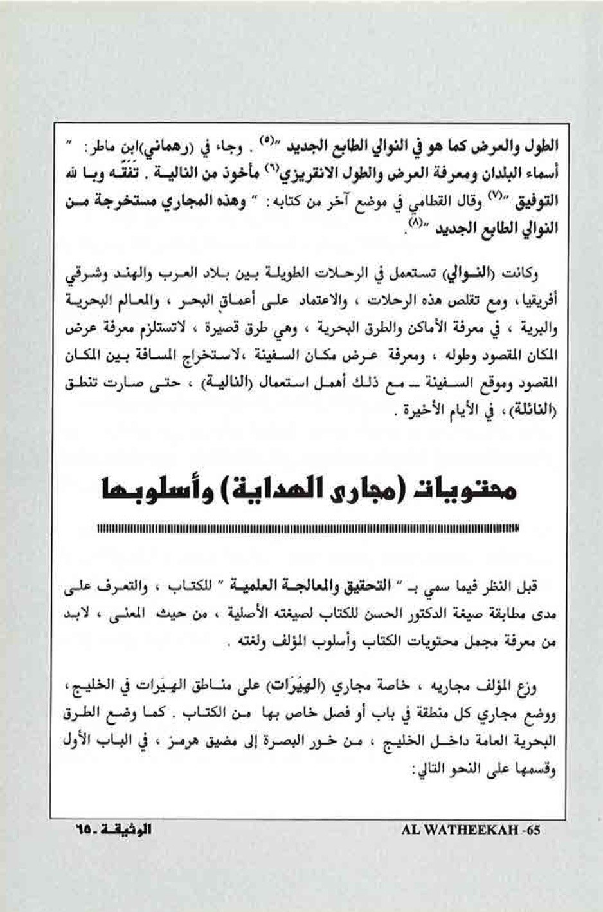
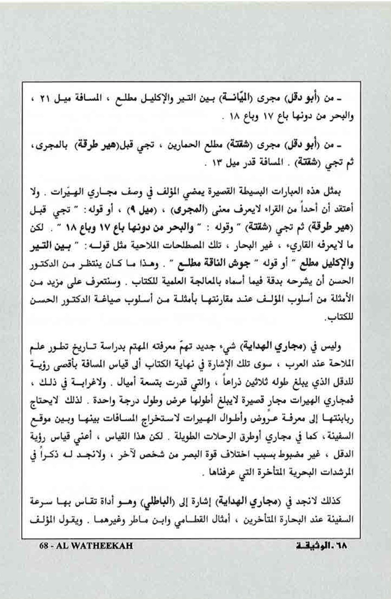
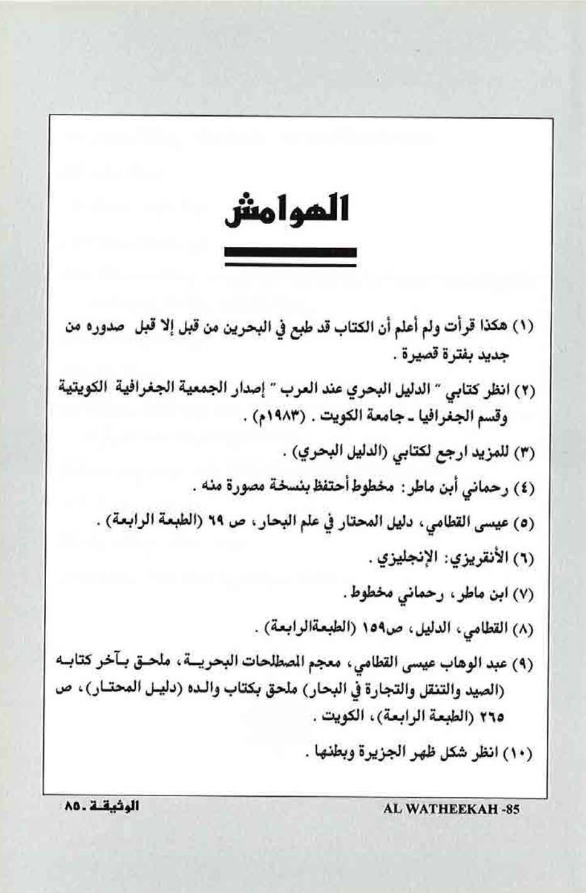

January 1996 · Journal article, Al-Watheeka, issue 29, year 15, Sha'ban 1416 AH (January 1996), Historical Documents Center, Bahrain, pages 64 to 70, 85 and 86
Al-Watheeka, Bahrain: Eissa Al-Qatami’s Dalil Al-Muhtar as the measure for Majari Al-Hidaya
What it is
A review of the new edition of Majari Al-Hidaya, the short guide to the pearling banks written by Captain Rashid bin Fadhel Al Bin Ali and first printed in Bahrain in 1341 AH (about 1922). The reviewer measures the book and its new editors against Eissa Al-Qatami’s Dalil Al-Muhtar throughout. Page 64: had they looked at «Dalil Al-Muhtar by Al-Qatami», they would have found that the word nayila is a corruption of naliya, the sea chart; he quotes Al-Qatami on the English charts bought in Bombay and Aden. Page 65 quotes Al-Qatami again: «these courses are taken from the newly printed charts». Page 66: most of the routes in Majari Al-Hidaya «had been described before by Al-Qatami in his book Dalil Al-Muhtar», and the Al-Adan coast is defined «as Abdulwahab Al-Qatami defined it». Page 68: Majari Al-Hidaya has no mention of the batli, the log used by later navigators «such as Al-Qatami and Ibn Mater». Pages 69 and 70: on the jawsh and damin of the compass points, «what Al-Qatami has is the more correct», with a diagram of the compass rose «according to Al-Qatami», and the editors never consulted «Dalil Al-Muhtar by Al-Qatami, the most famous of the rahmaniyat of the later navigators». The footnotes on pages 85 and 86 cite Dalil Al-Muhtar, fourth edition, pages 69, 155 and 159, and Abdulwahab Eissa Al-Qatami’s dictionary of nautical terms, appended to his Al-Sayd wal-Tanaqqul wal-Tijara fil-Bihar at the end of his father’s Dalil Al-Muhtar, page 265.
Why it matters
A Bahraini history journal treats Eissa’s Dalil Al-Muhtar as the standard reference of the Arabian Gulf navigators, and cites his son Abdulwahab’s dictionary of sea terms.
Page copies









Others named
Sources
Al-Watheeka, issue 29, year 15, Sha'ban 1416 AH (January 1996), Historical Documents Center, Bahrain, pages 64 to 70, 85 and 86
How this text was made: Photographed from the printed journal. The author’s name is not on the pages sent; in footnote 2 he cites his own book, Al-Dalil Al-Bahri ind Al-Arab (Kuwait, 1983). Page 82 does not mention the family and is not included.
Open in the interactive site